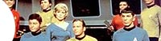

|


|
Conhea a
histria da produo da Srie Clssica relatada em
detalhes desde a concepo original de Gene Roddenberry at o
cancelamento, em 1969. Organizado em captulos.
Captulo 1:
Iniciando uma revoluo
Conhea o
elenco da Srie Clssica!  O conceito de
Jornada nas Estrelas "The Cage":
quantas jaulas h afinal? Volta Idade
da Pedra Courage: O
criador do tema mtico Jefferies: O pai
do visual clssico Coon: O heri
desconhecido |